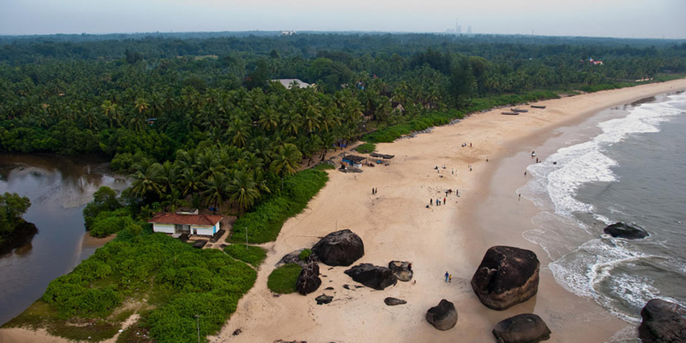

| Udupi is a coastal district in the Indian state
of Karnataka, known for its beautiful beaches, temples, and educational
institutions. Udupi is a simplified and peaceful version of Goa, with
stunning beaches like Malpe and Kaup. Udupi is also famous for its
vegetarian food, served in the South Indian style, which can be found in
Udupi restaurants all over India. Udupi is a place of delight which
brings happiness with its natural beauty. read more.html |